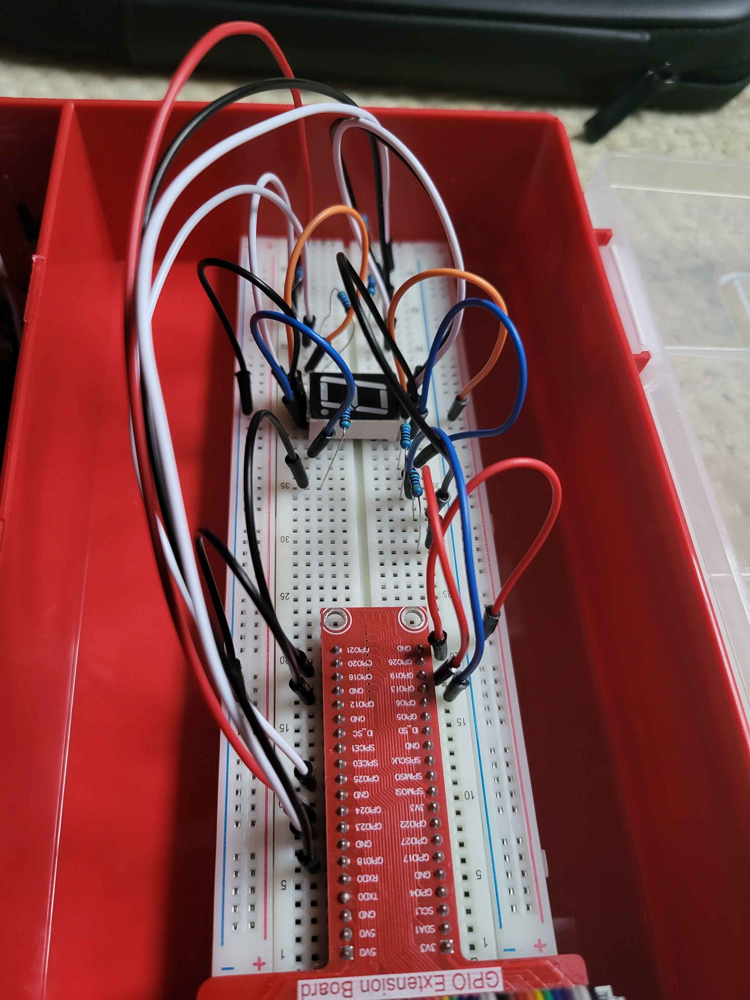
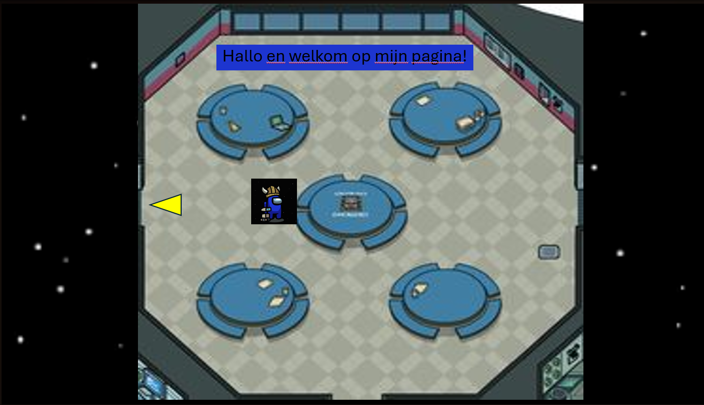
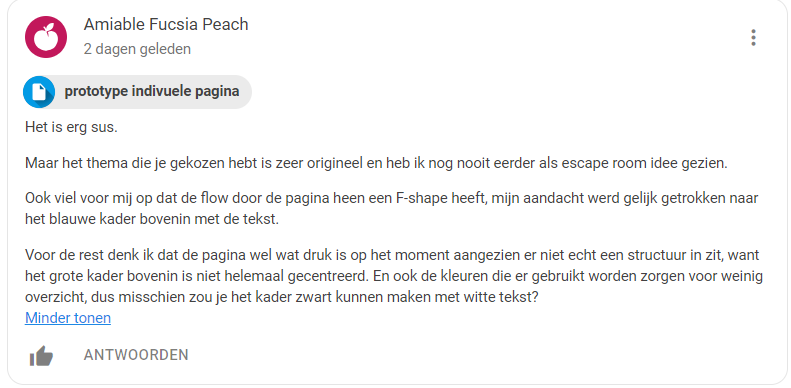

Deze week hebben we niet heel veel gedaan met Javascript. Vanwege de drukte de afgelopen week heb ik niet de tijd kunnen nemen om in mijn eigen tijd verder te gaan met leren van javascript. Het lijkt erop dat de aankomende week daar ook weinig tijd voor gaat zijn, maar ik ga toch proberen om er tijd voor te maken.
Nu ik zelf bezig ben geweest met het leren omgaan met de hardware (zie afbeelding ondering blog). Hierdoor snap ik nu veel meer hoe ik mijn puzzel kan uitwerken voor deze opdracht. Hierdoor kwam ik al heel snel tot de conclussie dat het idee dat ik had van 10 verschillende getallen weergeven een zeer ambitieus idee was. Hiervoor zou ik naar mijn idee namelijk 5 breadboards moeten gebruiken en dat gaat hem gewoon niet worden. Tijdens de aankomende vergadering van maandag met mijn projectgroep ga ik overleggen hoe ik mijn puzzel aan kan passen. Waarschijnlijk wordt het hetzelfde concept, maar dan met 4 getallen die iedere keer weer anders zijn. Daarnaast ga ik waarschijnlijk meerdere niveaus eraan toevoegen zodat de moeilijkheid van mijn puzzel hoger wordt na iedere ronde.
Ik ben een koppig iemand die niet graag om hulp vraagt. Zeker niet als ik vind dat ik iets zou moeten weten. Ik was namlijk bezig met het programmeergedeelte van mijn puzzel, wat een kwestie is van het combineren van lijsten, loops en een dictionairy. Ik was ongeveer 3 uur bezig totdat mijn vriendin tegen me moest zeggen dat ik het gewoon op internet moest opzoeken of aan mijn klasgenoten moest vragen aangezien ze merkte dat ik als maar sjagerijniger werd de langer ik ermee bezig was. Nadat ik dat had gedaan werden de problemen mij duidelijk, het probleem zat hem in de benamingen die ik gebruikte van de lijsten die ik hier en daar door elkaar haalde. Als je nu aan mij zou vragen wat ik geleerd heb, is mijn antwoord als volgt: Ik moet sneller om hulp vragen omdat ik anders mijzelf in de weg ga zitten en ik te veel tijd bezig ben met een klein onderdeel.
We zijn als projectgroep de afgelopen tijd wat meer bezig geweest met de uitwerking van de individuele onderdelen. Nu deze bij iedereen als het goed is bijna klaar zijn, kunnen we de aankomende week gaan focussen op de groepsonderdelen.Heel veel valt er verder niet te zeggen over dit onderdeel deze week. Het grootste gedeelte van het proces had onze groep al in de eerste week vaststaan.
Ik heb voor mijn keuzeontwerp van mijn website een leuk idee in mijn hoofd. We hebben als groep besloten om iets leuks te doen met onze eigen gemaakte avatars. Deze avatars zijn characters die Amogus heten en die hebben we opgemaakt met verschillende outfits uit de Among Us games. Daarnaast hebben we voor ieder groepslid een locatie op het eerste level van Among Us die we gebruiken voor onze persoonlijke website. Mijn idee was namelijk dat ik het mogelijk maak dat mijn eigen gemaakte avatar naar verschillende tafels toe kan laten lopen in Cafetaria (de locatie die ik gebruik voor mijn persoonlijke website). Iedere tafel heeft namelijk een ander onderdeel aan informatie. Zo heeft de ene tafel de blogs en een andere tafel weer een tijdlijn. Dit komt alleen niet overeen met wat de rest van mijn groep in gedachte heeft. Ik ga dus nog even navragen tijdens de vergadering of dat een probleem is.
Het realiseren van dingen wordt nu steeds belangrijker. Het gaat hier vooral om het behalen van de MVP en dan daarna het eindproduct verder uit bouwen. Ik ben door het werken met de hardware tot de realisatie gekomen dat het zeer lastig wordt om 10 verschillende getallen te laten zien met 10 verschillende 7-segment displays. Hierdoor ga ik in gesprek met mijn projectgenoten tijdens de vergadering om te kijken wat de beste manier is om hiermee om te gaan, al denk ik dat mijn eerder genoemde idee een juiste oplossing is.
Onze groep kwam een beetje tegen een muur op aangezien we dachten dat we al een stuk verder waren dan werkelijk was. We werken goed samen, maar dat leidt tot overmoedigheid in sommige situaties net zoals nu. Toen we ons dat realiseerde heb ik de rest van de groep gelijk aangesport om deze laatste dagen nog hard door te zetten. Ook de aankomende week wil ik dat blijven doen. Het zou zonden zijn als we dit project niet halen vanwegen een inzichtsfout van ons allen. In de tussentijd proberen we elkaar scherp te houden op de eindopdracht die we moeten opleveren. Ik ga proberen met de groep samen meer naar detailwerk te kijken van ieder onderdeel om er zeker van te zijn dat we niks over het hoofd zien.
Ik moet heel eerlijk zijn dat ik deze tussentijdse opdracht wat te simpel had ingeschat. Mijn ingeleverde prototype voor mijn individuele website voldeed niet aan vele eisen, zoals het zichtbaar hebben van een tijdlijn of de aanwezigheid van een mobile version van de website. Wel heb ik alsnog feedback ontvangen van een medestudent. Deze is hieronder te zien in de 3e afbeelding. Ik heb nog genoeg te veranderen aan het ontwerp en dat zal mijn focus worden voor de aankomende week. Niet allen om mijn eigen website goed eruit te laten zien, maar ook om bepaalde aspecten met de rest van mijn groep te delen zodat onze individuele websites wat actiever en bijzonder overkomen.
  